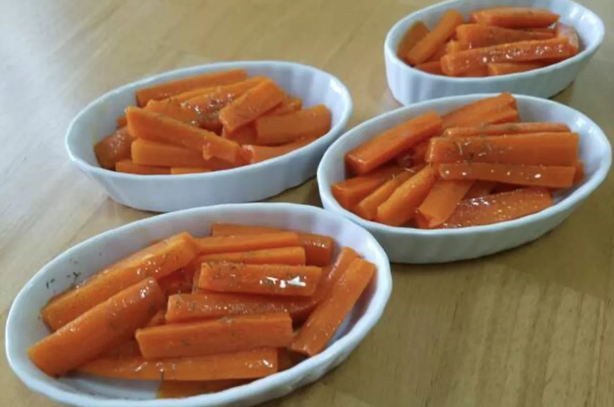

Glazed Carrots

Description
A simple yet delicious way to make carrots. Not too complicated to make yet a very good add on to most meals.
Ingredients
- 2 pounds Carrots peeled and cut into sticks (look for the firm, plump,bright ones)
- 1/4 cups Butter
- 1/4 cup Brown sugar (light or dark doesn't matter)
- 1/4 teaspoon salt
- 1/8 teaspoon ground pepper
Steps
- Place carrots into a large suacepan and add enough water to reach 1 inch of depth. Bring it to a boil.
- Reduce heat to low and cover. Let the carrots simmer until tender. Around 8-10 minutes.
- Drain and transfer to a bowl
- Melt butter on the same saucepan over low heat. Stir in the brown sugar, salt, and ground pepper until
dissolved.
- Add carrots to the sauce pan and toss until coated in the mixture. Cook and stir 1-3 more minutes after.